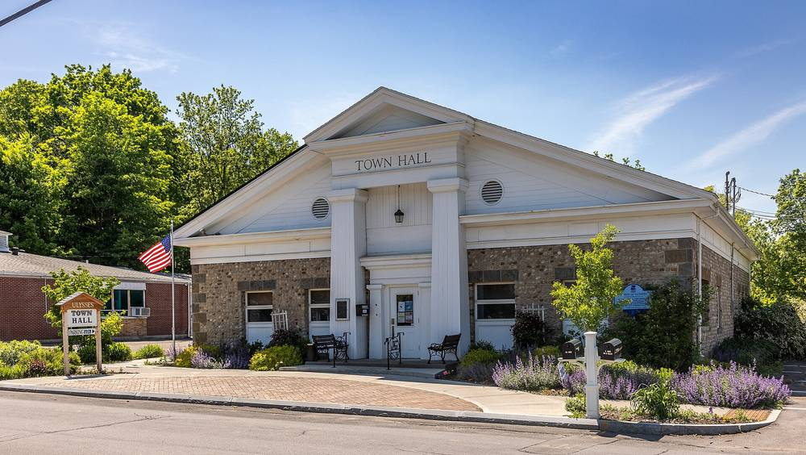

미국 뉴욕주 율리시스 타운, 도로관리 창고 부지에 태양광…전기는 타운홀·가로등 등 공공 계량기 4곳에 나눠 상계

타운 의회, 상한 9만4,164달러 설치 계약 만장일치 승인…주 정부 보조금 10만 달러로 충당, 2011년부터 지붕 태양광 운영해 와
미국 뉴욕주 톰킨스 카운티의 율리시스(Ulysses) 타운이 타운 소유 도로관리 창고 부지에 지상형 태양광을 짓고, 여기서 나오는 전기를 타운홀·가로등 등 타운 소유 계량기 4곳에 나눠 상계하기로 했다. 타운 의회는 10월 27일 회의에서 스커니애틀리스의 업체 New York Electric & Solar와 상한 9만4,164달러의 설치 계약을 만장일치로 승인했고, 사업비는 2025년 뉴욕주 에너지연구개발청(NYSERDA)에서 받은 보조금 10만 달러로 모두 충당할 계획이다. 타운은 2011년부터 타운홀과 창고 지붕에서 태양광을 운영해 왔지만 냉난방·온수 전기화와 전기차 충전기 설치로 두 건물의 전기 수요가 늘자 설비를 더하기로 했으며, 전력회사 NYSEG의 원격 상계 프로그램을 통해 새 발전량을 타운홀·창고·가로등 회로·카유가 자연센터 외부 조명 회로에 배정한다. 선정된 설비의 연간 예상 발전량은 4만3,546kWh로, 순배출 0에 필요하다고 추정한 약 4만5,852kWh에 조금 못 미친다. 테레사 네일러(Teressa Naylor) 부감독관은 최저가이면서 공모 요건을 빠짐없이 맞춘 업체를 골랐다면서도 NYSEG와의 계통 연결 비용이 아직 정해지지 않아 최종 비용은 달라질 수 있다고 말했으며, 설치는 2027년 12월 말까지 마칠 예정이다.
시민에너지 관점
율리시스는 2011년부터 지붕 태양광을 운영해 온 데 이어, 주 정부 보조금 10만 달러로 짓는 새 설비의 전기를 타운홀·창고·가로등·자연센터 조명 계량기 4곳에 나눠 쓰며 공공시설 여러 곳의 전기를 한데 묶어 계산하고 있다. 작은 설비 하나로 무엇이 달라지느냐는 의문이 있지만, 지붕이 모자라면 마당에 짓고 한 건물에서 다 못 쓰면 여러 계량기로 나누는 방식은 공공부지 한 곳의 햇빛을 여러 공공시설의 전기료 부담 덜기로 바꿔 놓는다. 다만 이 설비는 타운과 주 정부의 돈으로만 지어져 주민의 몫이 없으니, 공공부지 태양광이 한 걸음 더 나아가려면 주민이 출자하고 이익을 함께 나누는 지역 소유 구조로 넓어져야 한다. 우리 지자체도 차고지·창고·주차장 같은 공공부지의 발전량을 여러 공공시설 요금에 나눠 쓸 수 있는 길을 열고, 그 설비에 주민이 주인으로 참여할 방법부터 함께 설계해야 한다.
출처: Tompkins Weekly 2026-11-03 Eddie Velazquez 원문 보기
米ニューヨーク州ユリシーズ町、道路管理倉庫の敷地に太陽光…電力は町役場・街灯など公共メーター4カ所に分けて相殺
町議会、上限9万4,164ドルの設置契約を全会一致で承認…州の補助金10万ドルで賄う、2011年から屋根置き太陽光を運営
米ニューヨーク州トンプキンス郡のユリシーズ（Ulysses）町が、町有の道路管理倉庫の敷地に地上設置型の太陽光を建て、その電力を町役場や街灯など町が所有するメーター4カ所に分けて相殺することを決めた。町議会は10月27日の会合で、スカニーアトレスの企業New York Electric & Solarとの上限9万4,164ドルの設置契約を全会一致で承認し、事業費は2025年にニューヨーク州エネルギー研究開発局（NYSERDA）から受けた補助金10万ドルですべて賄う計画だ。町は2011年から町役場と倉庫の屋根で太陽光を運営してきたが、冷暖房・給湯の電化や電気自動車の充電器設置で2棟の電力需要が増えたため設備を加えることにし、電力会社NYSEGの遠隔クレジット（リモート相殺）制度を通じて新たな発電量を町役場・倉庫・街灯回路・カユガ自然センターの屋外照明回路に割り当てる。選ばれた設備の年間予想発電量は4万3,546kWhで、正味排出ゼロに必要と見積もった約4万5,852kWhにわずかに届かない。テレサ・ネイラー（Teressa Naylor）第2副町長は、最安値で公募要件をもれなく満たした業者を選んだとしつつ、NYSEGとの系統接続費用がまだ決まっておらず最終費用は変わり得ると述べ、設置は2027年12月末までに終える予定だ。
市民エネルギーの視点
ユリシーズは2011年から屋根置き太陽光を運営してきたのに続き、州の補助金10万ドルで建てる新設備の電力を町役場・倉庫・街灯・自然センター照明のメーター4カ所に分けて使い、複数の公共施設の電力をひとまとめに計算している。小さな設備ひとつで何が変わるのかという疑問はあるが、屋根が足りなければ敷地に建て、一つの建物で使い切れなければ複数のメーターに分けるやり方は、公共用地一カ所の日差しを複数の公共施設の電気代負担の軽減に変える。ただしこの設備は町と州のお金だけで建てられ住民の持ち分はないため、公共用地の太陽光がもう一歩進むには、住民が出資し利益を分かち合う地域所有の仕組みへと広がる必要がある。韓国の自治体も、車庫・倉庫・駐車場といった公共用地の発電量を複数の公共施設の料金に分けて使える道を開き、その設備に住民が持ち主として参加する方法から共に設計すべきだ。
出典: Tompkins Weekly 2026-11-03 Eddie Velazquez 原文を読む
美国纽约州尤利西斯镇在道路养护仓库用地建光伏…电力分配给镇政府大楼、路灯等4块公共电表抵扣
镇议会一致批准上限94,164美元的安装合同…以州政府补助10万美元支付，自2011年起运营屋顶光伏
美国纽约州汤普金斯县尤利西斯镇（Ulysses）决定在镇有道路养护仓库用地上建设地面光伏，并把所发电力分配给镇政府大楼、路灯等镇里拥有的4块电表进行抵扣。镇议会在10月27日的会议上一致批准与斯卡尼阿特勒斯企业New York Electric & Solar签订上限94,164美元的安装合同，项目费用计划全部由2025年从纽约州能源研究与发展局（NYSERDA）获得的10万美元补助支付。该镇自2011年起在镇政府大楼和仓库屋顶运营光伏，但随着供暖制冷和热水电气化、安装电动汽车充电桩，两栋建筑的用电需求增加，于是决定增建设备，并通过电力公司NYSEG的远程抵扣项目，把新增发电量分配给镇政府大楼、仓库、路灯线路和卡尤加自然中心室外照明线路。中选设备的年预计发电量为43,546千瓦时，略低于实现净零排放所需的约45,852千瓦时估算值。第二副镇长特蕾莎·内勒（Teressa Naylor）表示，选定的是报价最低且完全满足招标要求的企业，但与NYSEG的并网费用尚未确定，最终费用可能变化；设备预计在2027年12月底前完成安装。
市民能源视角
尤利西斯自2011年起运营屋顶光伏，如今又把用州政府10万美元补助建设的新设备所发电力分给镇政府大楼、仓库、路灯和自然中心照明4块电表，把多处公共设施的用电合并计算。有人会问，一套小设备能改变什么；但屋顶不够就建在场地上，一栋楼用不完就分给多块电表，这种做法把一处公共用地的阳光变成了多处公共设施电费负担的减轻。不过这套设备只用镇和州政府的钱建成，居民没有份额；公共用地光伏要再往前走一步，就应扩大为居民出资、共享收益的地方所有结构。韩国地方政府也应打通把车库、仓库、停车场等公共用地发电量分摊到多处公共设施电费的渠道，并从设计让居民以主人身份参与这些设备的办法做起。
来源: Tompkins Weekly 2026-11-03 Eddie Velazquez 查看原文
Ulysses, New York, to put solar at its highway barn and split the power across four town-owned meters including Town Hall and street lights
Town board unanimously approves an installation contract of up to $94,164, to be covered by a $100,000 state grant; the town has run rooftop solar since 2011
The town of Ulysses in Tompkins County, New York, will build a ground-mounted solar array on the site of its town-owned highway barn and credit the power it produces to four town-owned electric meters, including those for Town Hall and street lighting. At its Oct. 27 meeting the town board unanimously approved an installation contract of up to $94,164 with New York Electric & Solar of Skaneateles, and the town plans to cover the whole cost with a $100,000 grant it received in 2025 from the New York State Energy Research and Development Authority (NYSERDA). The town has run rooftop solar on Town Hall and the barn since 2011, but electrifying heating, cooling and hot water and adding electric vehicle chargers have pushed up demand at both buildings, so it is adding capacity and will use utility NYSEG's remote credit program to assign the new output to Town Hall, the barn, a street lighting circuit and an exterior lighting circuit at the Cayuga Nature Center. The selected system is expected to produce 43,546 kWh a year, slightly short of the roughly 45,852 kWh the town estimated it would need to reach net zero. Second Deputy Town Supervisor Teressa Naylor said the town chose the lowest bidder that met every requirement of its request for proposals, but that the interconnection cost with NYSEG is still unknown and could change the final bill; installation is due to be finished by the end of December 2027.
Citizen Energy View
Ulysses has run rooftop solar since 2011, and now it is spreading the output of a new array, paid for with a $100,000 state grant, across four meters for Town Hall, the barn, street lights and nature-center lighting, counting the electricity of several public facilities together. Some will ask what one small array can change, but building on open ground when roofs run short and splitting the output among several meters when one building cannot use it all turns the sunlight on a single public site into lower power bills for many public facilities. Yet the array is being built only with town and state money and residents have no stake, so for public-site solar to go a step further it needs to grow into local ownership in which residents invest and share the returns. Korean local governments, too, should open a way to split the output of public sites such as depots, warehouses and parking lots across the bills of several public facilities, and design from the start how residents can take part in those plants as owners.
Source: Tompkins Weekly 2026-11-03 Eddie Velazquez Read the original